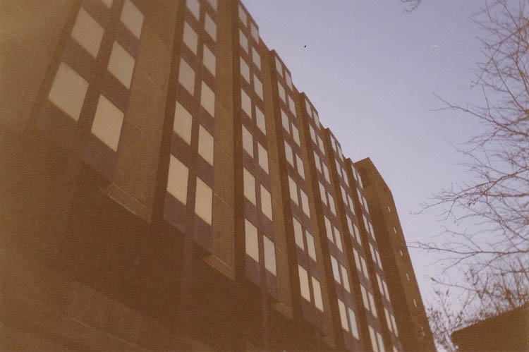
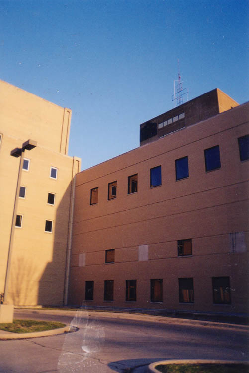
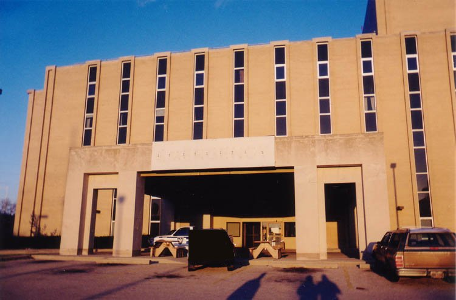

Ohio's hospitals have seen better years. Tightened reimbursement policies by HMOs, as well as an increase in the number of uninsured patients and the rising cost of providing medical care, have killed dozens throughout the state in the past two years alone. (Click here to read an article on the topic.) One of the saddest casualties of this chain of events was Dayton's Franciscan Medical Center, which closed its doors for good in September of 2000.
The Franciscan Medical Center was originally known as Saint Elizabeth's, a hospital established by the Franciscan Sisters in 1878 at the same location on Dayton's west side. Over the years new buildings went up and old ones came down, but the organization stayed the same--making the Franciscan one of the oldest hospitals in the state. It maintained a reputation as a hospital which gave immediate care to anyone, including the city's poor and homeless. Other hospitals frequently dumped their indigent patients on the Franciscan, which never failed to treat them. The disparities in the treatment given to the haves and the have-nots became even more pronounced when expensive "boutique" hospitals began popping up across the country--including the exclusive Dayton Heart Hospital, literally in the Franciscan's back yard. When the Franciscan finally shut down, it let 1600 employees go, and left a seven-building, 321-bed facility empty.

Aside from being an incredibly huge and complex closed building, the Franciscan is haunted. I had it listed on the website for a long time as the "Dayton Hospital," as it was sometimes known. In her book Haunted Ohio IV, Chris Woodyard interviews a woman who worked here before the hospital closed. She describes the place as being full of mysterious moving shadows and cold spots. The elevators, she said, travel up and down of their own volition, opening on floors where no one has punched a button.

These days the Franciscan is patrolled by guards who keep tabs on the huge place using a network of closed circuit cameras. Since it doesn't quite qualify as abandoned, it would have remained just a name on the hauntings list if it hadn't been for one of the guards--a friend of the website who offered to take me through the entire place one Friday evening in March of 2002. For once my expedition would be entirely legal. In the Franciscan, it would have to be; the guards are police officers who worked a special hospital detail before the place closed. Still, the place has all the creepy atmosphere of an abandoned building--and a haunted one. I thank our guard a million times over for his excellent (and exclusive) tour, and for offering it in the first place. It was extremely nice of him to take the time after his shift to show us around.
Just a few weeks after this section went up, the guard who gave us our tour was fired. Apparently the hospital's management came across my website. They were so offended that he'd shown me around the place that they terminated him, but that wasn't enough--they wanted this section taken down. The guard, who is a very nice guy, e-mailed me and explained the situation: if I took the section down, he'd get his job back. So, with great reluctance, I removed every mention of the Franciscan Medical Center from Forgotten Ohio. That was in the spring of 2002. It stayed down for the next year, until, in the spring of 2003, the guard e-mailed me and informed me that he was no longer employed at the hospital. This is the only instance ever of me removing anything from the website under pressure, and I'm happy to have it behind me.
Clicking below will take you through the hospital section by section; if you'd rather, you can skip ahead to the Rehabilitation Center, Psychiatric Ward, Morgue and Autopsy Room, or Hauntings at the Franciscan. If you'd prefer to go through sequentially, click below.
Back